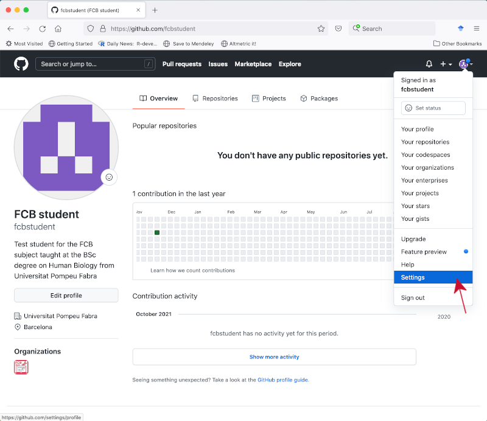
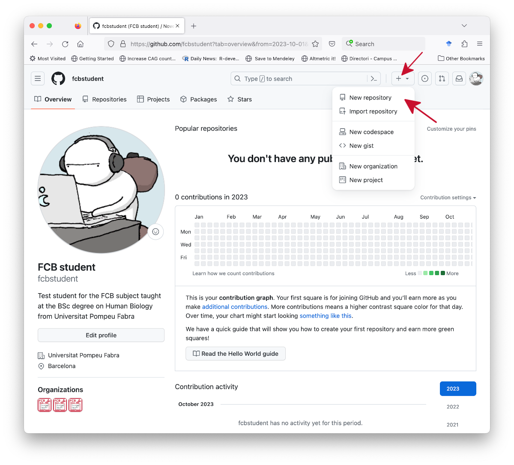

Objectives
The learning objectives for this practical are:
- Have your computer set up to work with the Unix command-line.
- Download epidemiological data from the Catalan SIVIC network.
- Setting up Git.
- Setting up a personal access token in GitHub.
- Setting up a Git repo in your local disk.
- Update your local Git repo.
- Upload your local Git repo to GitHub.
- Cloning a GitHub repo into a local Git repo.
- Push changes to GitHub.
- Pull changes from GitHub.
- Undo changes in your local Git repo.
Setup and background
In this practical we will learn to use the Git version control system
(VCS). You need to have access to a Unix command-line
interface (CLI) and to the Git VCS software. If you are doing this
practical in your own computer, please check the setup webpage to make sure that you have access to
some flavor of a Unix operating system, its CLI and the Git VCS.
We will use the data files called
mostres_analitzades.csv and
virus_detectats.csv downloaded and prepared in either practical 1 or practical 2. If you don’t have these files,
please review one of those two practicals and generate them again. Once
you have obtained those two files, copy them into a fresh new directory
called practical3.
Setting up Git
We start setting up some global options for Git. You only need to do
this once in your computer. Make sure you have Git installed in your
system by opening the Unix shell and typing:
$ git --version
If you get no answer from this command, it means that you need to
install the Git software. Check out the setup page
for instructions about how to install it. Once Git is installed, the
previous command should give you the installed version of the Git
software.
Now you should set up your identity with Git by giving your name and
email address. This information is important because Git will store it
in every commit and will allow you and others to track which changes you
have made. To set up your identity type:
$ git config --global user.name "XXXXX YYYY"
$ git config --global user.email "ZZZZ@WWWW.UUUU"
where XXXXX is your first name and YYYYY is
your family name, while ZZZZ@WWWW.UUUU if you student UPF
email address. Another handy additional instruction is to tell Git to
store your GitHub credentials into a hidden file
~/.git-credentials to avoid having to enter them each time
you do an operation that requires them, such as pushing your
changes to a remote GitHub repo. To set up that option type on the
shell
$ git config --global credential.helper store
You will need to write a message associated with each commit you make
to your Git repo. This can be done either in the command line with the
-m option of the git commit command, or in a
text editor that Git will launch for you. For that reason, it is useful
to set up your favorite text editor associated with Git, so that when
Git requires you to write some text, your favorite text editor is
launched. Please check the documentation in the following link
to find out how to set your favorite text editor associated with Git. If
you do not set up any text editor, it iss likely that when Git needs it,
it will start a classical text editor, such as Vi or Emacs. In the case
of Vi, to write any text, you first need to press the key of the letter
‘i’ to start typing. Once you are finished typing the message, press the
Esc key, type the colon character (:), and
finally type ‘x’ for save and quit the Vi editor.
To verify that you have set up your global configuration data
correctly, please type:
$ git config -l
Git has built-in documentation that you can access in different
ways:
$ git help
$ git help command
$ git command --help
where command is one of Git’s commands such as
add, commit or push.
Setting up a
personal access token in GitHub
Since August 2021, GitHub has raised their security standards by
separating the way in which we authenticate ourselves with a username
and a password into our GitHub profile at https://github.com, from the way in which
we authenticate ourselves to perform Git operations from the Unix
command line that affect a remote repo in https://github.com; see this blog
post if you want to have an intuition about GitHub acces tokens and
this page
for full details on how to generate them.
In summary, in both situations we should use the same username, but
with different passwords. For accessing our
GitHub profile at https://github.com we will use the
password we set when we created our profile, while for
performing Git operations from the Unix command line that affect a
remote repo in https://github.com we need to generate
another one, which GitHub calls a personal
access token, with the following steps:
Log into your GitHub profile at https://github.com and go to the
Settings option from the pull-down menu of your
profile.

Click on the Developer settings tab located on the
left-side menu panel.

Click on the Personal access token tab located on
the left-side menu panel.
Click on the Generate new token button.

In the form for generating a new personal access token enter
fcb on the Note field, set the
Expiration pull-down menu to No expiration and
select the checkbox repo among the
Select scopes options.
Click on the button Generate token at the bottom of
the page.

In the new page showing the personal access token, click on the
copy icon, or select and copy the token yourself, and store it securely
somewhere in your local disk. This is the password you will have
to use when you perform Git operations from the Unix command
line that affect a remote repo in https://github.com, such as the ones we
will see in sections Upload your local Git repo
to GitHub, Cloning a GitHub
repo into a local Git repo, Push
changes to GitHub and Pull
changes from GitHub.

Setting up a Git repo
in your local disk
Here we are going to set up our first Git repository, commonly
referred to with the shorthand Git repo, in our local disk.
First make sure you have a directory called practical3 with
the two CSV files mostres_analitzades.csv and
virus_detectats.csv. Now, enter the practical3
directory and type the following:
$ git init
Verify that the .git database directory has been created
by typing (you should see a directory called .git/ next to
your CSV files):
$ ls -lhaF
total 4864
drwxr-xr-x 5 robert staff 160B Oct 6 18:51 ./
drwxr-xr-x+ 115 robert staff 3.6K Oct 6 18:49 ../
drwxr-xr-x 9 robert staff 288B Oct 6 18:51 .git/
-rw-r--r--@ 1 robert staff 1.2M Oct 6 18:51 mostres_analitzades.csv
-rw-r--r--@ 1 robert staff 1.2M Oct 6 18:51 virus_detectats.csv
Checkout the status of your Git repo using
git status:
$ git status
On branch main
No commits yet
Untracked files:
(use "git add <file>..." to include in what will be committed)
mostres_analitzades.csv
virus_detectats.csv
nothing added to commit but untracked files present (use "git add" to track)
You should note that we have two modified files that are “untracked”
(unstaged). Stage those files by using the git add command
and check the status again:
$ git add .
$ git status
On branch main
No commits yet
Changes to be committed:
(use "git rm --cached <file>..." to unstage)
new file: mostres_analitzades.csv
new file: virus_detectats.csv
Finally, commit the staged files by doing:
$ git commit -m 'First commit.'
[main (root-commit) 3a7b39e] First commit
2 files changed, 28448 insertions(+)
create mode 100644 mostres_analitzades.csv
create mode 100644 virus_detectats.csv
Check out that the status doesn’t have pending commits anymore:
$ git status
On branch main
nothing to commit, working tree clean
Examine this first change with git log:
$ git log
commit 3a7b39e619809318a9076e38033ba226ccd60e80 (HEAD -> main)
Author: Robert Castelo <robert.castelo@upf.edu>
Date: Fri Oct 6 18:55:51 2023 +0200
First commit
Update your local Git repo
Here we want to practise how to update the local Git repo, keeping
track of the changes with Git. First, create a file called
mostres_analitzades_bcn.csv with the subset of the data in
mostres_analitzades.csv corresponding to the rows derived
from the area of Barcelona (see practical 2).
Once you have generated that file, check out the status of the repo. You
should notice that Git has detected a new file that is untracked. Stage
this untracked file and commit the change to the repo.
Upload your local Git repo
to GitHub
Here we want to create in GitHub a remote Git repo connected to our
local one. We illustrate such process using the previous local Git
repo.
To get started, log into your GitHub account, click on the plus sign
on the top-right and select “New repository” from the pull-down
menu.

In the next page, type practical3 in the textbox under
Repository name, select Private for the type
of repository and press the button Create repository.

At this point you have created in your GitHub account an empty Git
repo called practical3. We are going to connect it now with
our local Git repo of practical3. Make sure your CWD is the
Git repo practical3 in your local disk and follow the
instructions in the GitHub page under the title “… or push an
existing repository from the command line”. They consist of the
following three steps:
Create a new connection to your remote GitHub repo with
git remote add, REPLACING the
fcbstudent word below BY YOUR OWN
USERNAME):
$ git remote add origin https://github.com/fcbstudent/practical3.git
You can check whether this connection has been successfully
established by using the -v option with the
remote command:
$ git remote -v
origin https://github.com/fcbstudent/practical3.git (fetch)
origin https://github.com/fcbstudent/practical3.git (push)
If you see no URL connection specified to the right
of the word origin or if the connection you see is to the
fcbstudent user instead of your own, then you have
misspecified the repo URL. Before you try again to add the correct
remote connection, you should remove this bogus one by
typing:
$ git remote remove origin
Create the default branch under the name main:
$ git branch -M main
Push the contents of the current branch in the local Git repo to
the upstream main branch in the GitHub repo:
$ git push -u origin main
Enumerating objects: 7, done.
Counting objects: 100% (7/7), done.
Delta compression using up to 8 threads
Compressing objects: 100% (7/7), done.
Writing objects: 100% (7/7), 220.04 KiB | 2.62 MiB/s, done.
Total 7 (delta 3), reused 0 (delta 0), pack-reused 0
remote: Resolving deltas: 100% (3/3), done.
To https://github.com/fcbstudent/practical3.git
* [new branch] main -> main
branch 'main' set up to track 'origin/main'.
In this step you may be asked for your GitHub username and a
password. Warning: the password that you enter here to
perform this Git operation on a remote repository is
not the one you use to enter into your GitHub profile, but it
should be a personal access token that you have previously
generated (see the previous instructions on section Setting up a
personal access token in GitHub). If you enter the wrong password
then, instead of the previous output, you will get the following
error:
remote: Support for password authentication was removed on August 13, 2021.
Please use a personal access token instead.
remote: Please see https://github.blog/2020-12-15-token-authentication-requirements-for-git-operations/ for more information
fatal: Authentication failed for 'https://github.com/fcbstudent/practical3.git/'
In such a case, you should either try again with your personal
access token or, if you have not generate it yet, then go to the
previous instructions on Setting up a
personal access token in GitHub). and follow the steps to generate a
personal access token for GitHub. If you think you are using
the correct personal access token, but you still get an error,
then probably the connection to the remote GitHub repo has not been
correctly established. In such a case, go back to step 1, use the given
command to remove this current connection and try to add it again,
making sure that the GitHub URL is correct.
Click now on the link to the private repo on the top-left of your
GitHub account (yourgithubusername/practical3) to go to the
page of the repo and check that the files have been successfully
uploaded to GitHub.

Check out also that the status of your local repo tells that it is up
to date with the new remote connection.
$ git status
On branch main
Your branch is up to date with 'origin/main'.
nothing to commit, working tree clean
The GitHub page for the repo has several tabs, where the one called
“Settings” can be used to configure some of the other tabs and perform
actions such as switching the visibility from private to public or
delete entirely this Git repo from GitHub.
Cloning a GitHub
repo into a local Git repo
The reverse operation of uploading a local repo to a GitHub is
cloning a GitHub repo into a local repo. When you
clone a GitHub repo, you are copying into your local filesystem
all the files, version history and branches from the GitHub repo.
To clone a GitHub repo into your local filesystem you use
the Git command clone as follows:
$ git clone https://github.com/USERNAME/REPONAME [DIRECTORY]
where USERNAME is the username owner of the repo you
want to clone, while REPONAME is the name of the
Git repo you want to clone. Optionally, you can give a
directory name in DIRECTORY to clone the repo under a
directory called differently to the REPONAME.
For instance, go to your home directory and clone your recently
created GitHub repo practical3 into a different name such
as practical3copy by doing:
$ cd
$ git clone https://github.com/USERNAME/practical3 practical3copy
where you should replace USERNAME by your username. The
system will ask you for your usename and password, where you should copy
and paste your GitHub access token as a password.
Push changes to GitHub
Here, we are going to see how update the new local copy of our remote
GitHub repo and send (push in Git terminology) those changes to
the remote GitHub repo. Enter in the directory of this new local copy of
the GitHub repo and introduce a change by creating a
README.md file using a Unix shell terminal output
redirection as follows:
$ cd practical3copy
$ cat > README.md
This is Practical 3!
Remember to press the keys Ctrl+d once you’ve typed the
text. Now list the files, verify that a new file called
README.md is there, that it has the contents you’ve typed
and check the status of the repo:
$ ls
README.md mostres_analitzades_bcn.csv
mostres_analitzades.csv virus_detectats.csv
$ cat README.md
This is Practical 3!
$ git status
On branch main
Your branch is up to date with 'origin/main'.
Untracked files:
(use "git add <file>..." to include in what will be committed)
README.md
nothing added to commit but untracked files present (use "git add" to track)
Stage the modified files and check the status again:
$ git add .
$ git status
On branch main
Your branch is up to date with 'origin/main'.
Changes to be committed:
(use "git restore --staged <file>..." to unstage)
new file: README.md
Commit the staged files and check the status again:
$ git commit -m 'Added README.md'
[main 64b8488] Added README.md
1 file changed, 1 insertion(+)
create mode 100644 README.md
$ git status
On branch main
Your branch is ahead of 'origin/main' by 1 commit.
(use "git push" to publish your local commits)
nothing to commit, working tree clean
Finally, push the changes to the remote GitHub repo:
$ git push
Enumerating objects: 4, done.
Counting objects: 100% (4/4), done.
Delta compression using up to 8 threads
Compressing objects: 100% (2/2), done.
Writing objects: 100% (3/3), 299 bytes | 299.00 KiB/s, done.
Total 3 (delta 1), reused 0 (delta 0), pack-reused 0
remote: Resolving deltas: 100% (1/1), completed with 1 local object.
To https://github.com/fcbstudent/practical3
0cd8cf9..64b8488 main -> main
If this last step has been successful, you should be able to see the
new file after reloading the webpage of GitHub, and actually its
contents as shown here below (a README.md file at the root
of a GitHub repo has a special treatment
in the GitHub page of the repo).

Pull changes from GitHub
You have your initial copy of the GitHub repo at
~/practical3 and a modified copy at
~/practical3copy, where the latter has been synchronized
with the remote GitHub repo. Now, let’s see how could we update
(pull in Git terminology) our initial copy with the latest
changes made in the second copy of our repo. First enter the directory
of the initial copy of the GitHub repo (here we assume it was created at
the home directory) and verify it lacks the last file
README.md we have added to the GitHub repo:
$ cd
$ cd practical3
$ ls
mostres_analitzades.csv virus_detectats.csv
mostres_analitzades_bcn.csv
Second, pull the changes from GitHub and verify the new file
README.md has been added to this copy of the GitHub
repo:
$ git pull
remote: Enumerating objects: 4, done.
remote: Counting objects: 100% (4/4), done.
remote: Compressing objects: 100% (1/1), done.
remote: Total 3 (delta 1), reused 3 (delta 1), pack-reused 0
Unpacking objects: 100% (3/3), 279 bytes | 93.00 KiB/s, done.
From https://github.com/fcbstudent/practical3
0cd8cf9..64b8488 main -> origin/main
Updating 0cd8cf9..64b8488
Fast-forward
README.md | 1 +
1 file changed, 1 insertion(+)
create mode 100644 README.md
$ ls
README.md mostres_analitzades_bcn.csv
mostres_analitzades.csv virus_detectats.csv
In general, you will not work with two local copies of the same
GitHub repo in the same computer. We have used these two copies
here only to illustrate how to clone a remote repo,
and push and pull changes from that repo. The main
utility of these actions is when either you work in two or more
computers and need to synchronize your local copies of the GitHub repo,
or you are working with collaborators that all update the same GitHub
repo.
Undo changes in your local
Git repo
One of the great things about working with a version-control system
is the ability to undo changes, reverting to some previous state of your
files. This functionality, however, only applies to changes that have
been staged and committed to the Git database. For this reason, it is
important and useful to commit your changes often. Depending on the kind
change you want to undo, the command to undo that change will be
different. Here we cover a few cases:
Restore a deleted file. There are several
options depending on the moment in which you deleted the file:
The file was deleted before or after the deletion was staged, but
the deletion was not commited to the Git database. We illustrate here
this case by removing the file mostres_analitzades.csv and
immediately restoring it again:
$ rm mostres_analitzades.csv
$ ls
README.md virus_detectats.csv
mostres_analitzades_bcn.csv
$ git status
On branch main
Your branch is up to date with 'origin/main'.
Changes not staged for commit:
(use "git add/rm <file>..." to update what will be committed)
(use "git restore <file>..." to discard changes in working directory)
deleted: mostres_analitzades.csv
no changes added to commit (use "git add" and/or "git commit -a")
$ git checkout HEAD mostres_analitzades.csv ## <-- RESTORING GIT COMMAND
Updated 1 path from 7b1b617
$ ls
README.md mostres_analitzades_bcn.csv
mostres_analitzades.csv virus_detectats.csv
After the file was deleted, that deletion was staged and commited
to the Git database and no other commits were introduced. Let’s
illustrate it again removing the file
mostres_analitzades.csv, but this time staging and
commiting that change:
$ rm mostres_analitzades.csv
$ git add .
$ git commit -m 'Removed mostres_analitzades.csv'
[main 7946ebf] Removed mostres_analitzades.csv
1 file changed, 14613 deletions(-)
delete mode 100644 mostres_analitzades.csv
$ ls
README.md virus_detectats.csv
mostres_analitzades_bcn.csv
$ git status
On branch main
Your branch is ahead of 'origin/main' by 1 commit.
(use "git push" to publish your local commits)
nothing to commit, working tree clean
$ git reset HEAD~1 ## <-- RESTORING GIT COMMAND
Unstaged changes after reset:
D mostres_analitzades.csv
$ git status
On branch main
Changes not staged for commit:
(use "git add/rm <file>..." to update what will be committed)
(use "git restore <file>..." to discard changes in working directory)
deleted: mostres_analitzades.csv
no changes added to commit (use "git add" and/or "git commit -a")
The Git command git reset HEAD~1 reverts the deletion
commit leaving it as an unstaged change and therefore, you should still
apply the previous option 1 above to recover the file:
$ git checkout HEAD mostres_analitzades.csv ## <-- RESTORING GIT COMMAND
Updated 1 path from 7b1b617
$ ls
README.md mostres_analitzades_bcn.csv
mostres_analitzades.csv virus_detectats.csv
After the file was deleted, that deletion was staged and commited
to the Git database and afterwards other commits were also introduced.
Let’s illustrate it again removing the file
mostres_analitzades.csv, but this time staging and
commiting that change and staging and commiting one further change:
$ rm mostres_analitzades.csv
$ git add .
$ git commit -m 'Removed mostres_analitzades.csv'
[main 588acf0] Removed mostres_analitzades.csv
1 file changed, 14613 deletions(-)
delete mode 100644 mostres_analitzades.csv
$ ls
README.md virus_detectats.csv
mostres_analitzades_bcn.csv
$ git status
On branch main
Your branch is ahead of 'origin/main' by 1 commit.
(use "git push" to publish your local commits)
nothing to commit, working tree clean
$ head virus_detectats.csv > virus_detectats_head.csv
$ ls
README.md virus_detectats.csv
mostres_analitzades_bcn.csv virus_detectats_head.csv
$ git add .
$ git commit -m 'Added virus_detectats_head.csv'
[main cdc101b] Added virus_detectats_head.csv
1 file changed, 10 insertions(+)
create mode 100644 virus_detectats_head.csv
At this point we should look up the commit
hash of the change that removed the file, using the command
git log -- removedfilename:
$ git log -- mostres_analitzades.csv
commit 588acf0ecace42d0b53cb00b71bcc500f3fd4aba
Author: Robert Castelo <robert.castelo@upf.edu>
Date: Fri Oct 6 19:36:46 2023 +0200
Removed mostres_analitzades.csv
commit 3a7b39e619809318a9076e38033ba226ccd60e80
Author: Robert Castelo <robert.castelo@upf.edu>
Date: Fri Oct 6 18:55:51 2023 +0200
First commit
Then, check out the file from the commit before the one that deleted
it using the command
git checkout commithash~1 -- removedfilename:
$ git checkout 588acf0ecace42d0b53cb00b71bcc500f3fd4aba~1 -- mostres_analitzades.csv
$ ls
README.md virus_detectats.csv
mostres_analitzades.csv virus_detectats_head.csv
mostres_analitzades_bcn.csv
Here the characters ~1 at the end of the commit hash
indicate Git to go exactly one commit before the given commit hash.
Finally, you should stage and commit the recovered file since it will
appear to Git as a new file:
$ git status
On branch main
Changes to be committed:
(use "git restore --staged <file>..." to unstage)
new file: mostres_analitzades.csv
$ git add .
$ git commit -m 'Added back mostres_analitzades.csv'
[main 85448e7] Added back mostres_analitzades.csv
1 file changed, 14613 insertions(+)
create mode 100644 mostres_analitzades.csv
$ git status
On branch main
Your branch is ahead of 'origin/main' by 3 commits.
(use "git push" to publish your local commits)
nothing to commit, working tree clean
In this example we have a copy of our repo in GitHub, and for that
reason the status command keeps tellings us that our local copy has 3
commits that are not yet synchronized with the remote repo (Your
branch is ahead of ‘origin/main’ by 3 commits). We can synchronize
these 3 commits with the remote repo by doing git push:
$ git push
Enumerating objects: 8, done.
Counting objects: 100% (8/8), done.
Delta compression using up to 8 threads
Compressing objects: 100% (7/7), done.
Writing objects: 100% (7/7), 1.01 KiB | 1.01 MiB/s, done.
Total 7 (delta 3), reused 0 (delta 0), pack-reused 0
remote: Resolving deltas: 100% (3/3), completed with 1 local object.
To https://github.com/fcbstudent/practical3.git
64b8488..85448e7 main -> main
$ git status
On branch main
Your branch is up to date with 'origin/main'.
nothing to commit, working tree clean
If you examine the whole history of this example, you should find the
commits corresponding to the deletion, the addition of a new file and
the recovery of the deleted file:
```
$ git log
commit 85448e7f651826dc33cee9b40b8f68e57f547bd5 (HEAD -> main)
Author: Robert Castelo <robert.castelo@upf.edu>
Date: Fri Oct 6 19:47:08 2023 +0200
Added back mostres_analitzades.csv
commit cdc101bb0c70a2468832af30b2290918e59f4bb5
Author: Robert Castelo <robert.castelo@upf.edu>
Date: Fri Oct 6 19:40:10 2023 +0200
Added virus_detectats_head.csv
commit 588acf0ecace42d0b53cb00b71bcc500f3fd4aba
Author: Robert Castelo <robert.castelo@upf.edu>
Date: Fri Oct 6 19:36:46 2023 +0200
Removed mostres_analitzades.csv
commit 64b8488694d676dbe785b8e54dc17e3ec60bd07e (origin/main)
Author: Robert Castelo <robert.castelo@upf.edu>
Date: Fri Oct 6 19:22:38 2023 +0200
Added README.md
commit 0cd8cf9186004455bd548a7b91f5c20604be6ea9
Author: Robert Castelo <robert.castelo@upf.edu>
Date: Fri Oct 6 18:58:32 2023 +0200
Added Barcelona subset of the data
commit 3a7b39e619809318a9076e38033ba226ccd60e80
Author: Robert Castelo <robert.castelo@upf.edu>
Date: Fri Oct 6 18:55:51 2023 +0200
First commit
```
Restore a specific version of a file. There are
several options depending on the state of the change you want to
revert.
The modified file has not been staged and commited to the Git
database. We illustrate here this case by adding the last 10 lines from
the file virus_detectats.csv to the end of the file
virus_detectats_head.csv:
$ wc -l virus_detectats_head.csv ## WE HAD 10 LINES
10 virus_detectats_head.csv
$ tail virus_detectats.csv >> virus_detectats_head.csv
$ wc -l virus_detectats_head.csv ## NOW WE HAVE 20 LINES
20 virus_detectats_head.csv
$ git status
On branch main
Your branch is up to date with 'origin/main'.
Changes not staged for commit:
(use "git add <file>..." to update what will be committed)
(use "git restore <file>..." to discard changes in working directory)
modified: virus_detectats_head.csv
no changes added to commit (use "git add" and/or "git commit -a")
$ git checkout virus_detectats_head.csv ## <-- RESTORING COMMAND
Updated 1 path from the index
$ wc -l virus_detectats_head.csv ## WE HAVE THE ORIGINAL 10 LINES AGAIN
10 virus_detectats_head.csv
$ git status
On branch main
ur branch is up to date with 'origin/main'.
nothing to commit, working tree clean
The modified file has been staged, but not commited to the Git
database. We illustrate this case with the same modification as the
previous one.
$ wc -l virus_detectats_head.csv ## WE HAD 10 LINES
10 virus_detectats_head.csv
$ tail virus_detectats.csv >> virus_detectats_head.csv
$ wc -l virus_detectats_head.csv ## NOW WE HAVE 20 LINES
20 virus_detectats_head.csv
$ git add .
$ git status
On branch main
Your branch is up to date with 'origin/main'.
Changes to be committed:
(use "git restore --staged <file>..." to unstage)
modified: virus_detectats_head.csv
$ git restore --staged virus_detectats_head.csv ## <-- RESTORING COMMAND
$ wc -l virus_detectats_head.csv ## WE STILL HAVE 20 LINES
20 virus_detectats_head.csv
$ git status
On branch main
Your branch is up to date with 'origin/main'.
Changes not staged for commit:
(use "git add <file>..." to update what will be committed)
(use "git restore <file>..." to discard changes in working directory)
modified: virus_detectats_head.csv
no changes added to commit (use "git add" and/or "git commit -a")
Note that the command git restore --staged filename
unstages the file, but the modifications remain. Therefore, if you want
to revert those modifications, you should follow the previous option 1
to restore the original unmodified version of the file:
$ git checkout virus_detectats_head.csv ## <-- RESTORING COMMAND
Updated 1 path from the index
$ wc -l virus_detectats_head.csv ## WE HAVE THE ORIGINAL 10 LINES AGAIN
10 virus_detectats_head.csv
$ git status
On branch main
Your branch is up to date with 'origin/main'.
nothing to commit, working tree clean
The modified file has been staged and commited to the Git
database. We illustrate this case with the same modification as the
previous ones.
$ wc -l virus_detectats_head.csv ## WE HAD 10 LINES
10 virus_detectats_head.csv
$ tail virus_detectats.csv >> virus_detectats_head.csv
$ wc -l virus_detectats_head.csv ## NOW WE HAVE 20 LINES
20 virus_detectats_head.csv
$ git status
On branch main
Your branch is up to date with 'origin/main'.
Changes not staged for commit:
(use "git add <file>..." to update what will be committed)
(use "git restore <file>..." to discard changes in working directory)
modified: virus_detectats_head.csv
no changes added to commit (use "git add" and/or "git commit -a")
$ git add .
$ git commit -m 'Modified virus_detectats_head.csv'
[main f5ee71e] Modified virus_detectats_head.csv
1 file changed, 10 insertions(+)
$ git status
On branch main
Your branch is ahead of 'origin/main' by 1 commit.
(use "git push" to publish your local commits)
nothing to commit, working tree clean
In this case, however, we should look up the commit
hash of the change that modified the file, using the command
git log --follow -- modifiedfilename:
$ git log --follow -- virus_detectats_head.csv
commit f5ee71ee6e4c4cb2bb9bd0070768d3c97f599de7 (HEAD -> main)
Author: Robert Castelo <robert.castelo@upf.edu>
Date: Sun Oct 8 19:04:58 2023 +0200
Modified virus_detectats_head.csv
commit cdc101bb0c70a2468832af30b2290918e59f4bb5
Author: Robert Castelo <robert.castelo@upf.edu>
Date: Fri Oct 6 19:40:10 2023 +0200
Added virus_detectats_head.csv
Then, we can finally revert the modified file to the revision before
the modification as follows:
$ git restore --source f5ee71ee6e4c4cb2bb9bd0070768d3c97f599de7~1 virus_detectats_head.csv
$ wc -l virus_detectats_head.csv ## WE HAVE THE ORIGINAL 10 LINES AGAIN
10 virus_detectats_head.csv
Here the characters ~1 at the end of the commit hash
indicate Git to go exactly one commit before the given commit hash. Note
that now the file has again 10 lines, corresponding in this example to
its state before the modification. However, you should stage and commit
this file because the restored version appears to Git as a new
modification:
$ git status
On branch main
Your branch is ahead of 'origin/main' by 1 commit.
(use "git push" to publish your local commits)
Changes not staged for commit:
(use "git add <file>..." to update what will be committed)
(use "git restore <file>..." to discard changes in working directory)
modified: virus_detectats_head.csv
no changes added to commit (use "git add" and/or "git commit -a")
$ git add .
$ git commit -m 'Restored previous version of virus_detectats_head.csv'
[main 3c4a3a5] Restored previous version of virus_detectats_head.csv
1 file changed, 10 deletions(-)
If you examine the whole history of this example, you should find the
commits corresponding to the modification and the addition of the file
corresponding to its version before that modification:
$ git log
commit 3c4a3a5375f743fb93e35a05c3de03970ae5c986 (HEAD -> main)
Author: Robert Castelo <robert.castelo@upf.edu>
Date: Sun Oct 8 19:11:38 2023 +0200
Restored previous version of virus_detectats_head.csv
commit f5ee71ee6e4c4cb2bb9bd0070768d3c97f599de7
Author: Robert Castelo <robert.castelo@upf.edu>
Date: Sun Oct 8 19:04:58 2023 +0200
Modified virus_detectats_head.csv
commit 85448e7f651826dc33cee9b40b8f68e57f547bd5 (HEAD -> main)
Author: Robert Castelo <robert.castelo@upf.edu>
Date: Fri Oct 6 19:47:08 2023 +0200
Added back mostres_analitzades.csv
commit cdc101bb0c70a2468832af30b2290918e59f4bb5
Author: Robert Castelo <robert.castelo@upf.edu>
Date: Fri Oct 6 19:40:10 2023 +0200
Added virus_detectats_head.csv
commit 588acf0ecace42d0b53cb00b71bcc500f3fd4aba
Author: Robert Castelo <robert.castelo@upf.edu>
Date: Fri Oct 6 19:36:46 2023 +0200
Removed mostres_analitzades.csv
commit 64b8488694d676dbe785b8e54dc17e3ec60bd07e (origin/main)
Author: Robert Castelo <robert.castelo@upf.edu>
Date: Fri Oct 6 19:22:38 2023 +0200
Added README.md
commit 0cd8cf9186004455bd548a7b91f5c20604be6ea9
Author: Robert Castelo <robert.castelo@upf.edu>
Date: Fri Oct 6 18:58:32 2023 +0200
Added Barcelona subset of the data
commit 3a7b39e619809318a9076e38033ba226ccd60e80
Author: Robert Castelo <robert.castelo@upf.edu>
Date: Fri Oct 6 18:55:51 2023 +0200
First commit